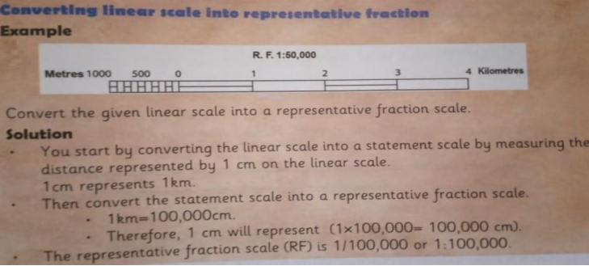

STRAND 1 PEOPLE AND POPULATION.
1.1 Scientific theory about human origin.
° The scientific theory about human origin is also called the evolution theory.
° It was developed by Charles Darwin.
° The theory argues that all living organism underwent processes of change over millions of years by evolving from simple forms to complex forms.
° This happened through the processes of:
° Mutation -human organisms went through changes in their genes and the behaviour of their bodies.
° Natural selection -after mutation only the fittest or strongest organisms survived.
° Adaptation -after surviving mutation and natural selection, the organisms adapted to their new environment
Stages of Human evolution.
The following are stages of human evolution.
Aegyptopithecus.
î Was the earliest ancestor of both human beings and apes.
î Was discovered in Egypt.
î Moved on four limbs.
î Had a tail.
Dryopithecus.
î Had a flat skull and larger canines.
î Was discovered in Rusinga Island.
î Moved on four limbs.
î Had a pointed face.
Kenyapithecus or Ramapithecus.
î Had larger teeth and jawbone.
î Was discovered in Fort Tenan.
î Moved on two legs.
î Had a larger brain capacity.
Australopithecus.
î Had a loping forehead, projecting face and big eyebrows.
î Fossils were discovered in Ethiopia and Kenya.
î Walked upright and had a larger brain capacity than Kenyapithecus.
Homo habilis (Handy man.)
î Was human-like but with longer arms.
î They lived in families.
î Had a brain capacity larger than that of Australopithecus.
î Was discovered in Olduvai Gorge in Tanzania.
Homo erectus
î Was upright man.
î Was clever with brain capacity of 850cm3 which was larger than of Homo habilis.
î Discovered fire and made advanced tools.
Homo sapiens.
î They were more intelligent than the Homo erectus.
î Had a brain capacity of 1000-1800cm3.
î Had straight legs and walked with long strides.
î Back of the skull was rounded with square eye socket.
Homo sapiens sapiens.
î Was the last stage of human evolution.
î Is the most advanced creature to appear on earth
Importance of Fossil Records.
¦ Fossils refer to the preserved remains of plants and animals that are found beneath the surface of the earth.
¦ Fossil records help to understand how human beings evolved, lived, adapted and changed their physical appearance in the past.
¦ Fossil records have the following importance:
✓ Provide past evidence on how plants and animals adapted to their environment.
✓ Helps to establish evolutionary relationship between organisms and their ancestors.
✓ Fossil records help to establish the time period in which organisms lived.
✓ Fossil records help archeologists and other natural scientists to place important events and species in the appropriate historical and geographical era.
✓ Fossil records of humans help us to understand the social, political and economic life of man over years.
✓ They give us information on the culture of humans, clothing, food, and beliefs in the past.
✓ Fossil records give us information on the economic activities of man such as the animals they hunted, crops they cultivated, fishing among others.
✓ Fossil records give us information on the type and uses of tools and other materials used by humans in farming, hunting, war or religious activities over the years.
✓ They provide evidence of Africa being the cradle of humanity.
Locations of human remains discovered in Africa.
Prehistoric sites are places where man’s remains which are evident of his past existence were found.
The oldest known human remains in Africa were discovered in Ethiopia, dating back to around 200,000 years ago.
The following are a few examples of where and when pre-historic human remains have been discovered in Africa.
Human remain | Location discovered | Time discovered |
Australopithecus | Taung in Botswana Olduvai gorge in Tanzania. Omo valley in Ethiopia. | 1924 1959 1974 |
Homo habilis | Olduvai gorge in Tanzania. Kobi fora. Olorgesaile near Lake Magadi in Kenya | 1964 1969 |
Homo erectus | Shores of lake Turkana in Kenya. Hadar in Ethiopia. Morocco. South Africa. Algeria. Nariokotone River (Kenya) | 1984 |
Somo sapiens | Eliye springs 9kenya) near Lake Turkana. Omo river in Ethiopia. Ngaloba in Tanzania | |
Other places are:
Fort Ternan (Kenya) where Ramapithecus or Kenyapithecus were found.
Changes that took places in humans as a result of evolution.
° Evolution of human beings has been a continuous process resulting from various changes and adaptations.
° These changes are characterized in their teeth, arms, body shape, brain size, structure of their legs and shape of their head.
° These changes were important for them to adapt to new environmental conditions for survival.
° Human beings evolved to walk on two legs, freeing their hands for tool use and enhancing mobility.
° Overtime, the human brain had grown, leading to advanced cognitive abilities.
° They developed the ability to make and use tools.
° Humans developed language, enabling communication.
° Evolution influenced teeth, adapting them to a diverse diet including plants and animals.
° Humans evolved complex social structures, forming family units and communities. ° Humans have had reduced hair on the bodies.
1.2 Early civilization.
Places of origin of early visitors to the East Africa coast.
East Africa was visited by visitors from Europe and Asia.
They included the following:
¦ Arabs
¦ Portuguese.
¦ Indian.
¦ Persians.
¦ Chinese.
¦ Greek.
¦ Egyptians.
¦ Phoenicians.
¦ Romans.
¦ Syrians.
Swahili civilization along the East African Coast.
î The east African coastline is a long stretch made up of Somali, Kenya, Tanzania and Mozambique.
î Swahili civilization developed from the interactions between local bantu speaking communities and the Arab traders who visited the East African Coast.
î They practiced a blend of Islam and traditional African religions. They changed the culture, religions, economic and even social way of life.

î They came up with new clothing designs to blend with different cultures. This includes Kanga, kanzu and taqiyah. They also introduced special Swahili foods such as biryani, pilau, mahamri among others.
î Swahili people were known for their skills in trading, fishing and seafaring.
î They established city-states such as Kilwa, Mombasa and Zanzibar which later become centres of trade.
î They traded their goods such as gold, ivory and slaves. They built impressive religious structures such as mosques and houses made from makuti, coral stones and lime.
î The Swahili people constructed dhows which were small wooden boats that helped them navigate along the East African Coast of the Indian Ocean.
î They also had networks of trade routes that connected them to other parts of Africa and the Middle East.
î Over time, European powers established colonies in East Africa. They abolished the slave trade, which had a significant source of wealth for the Swahili city-state. However, the Swahili people and their culture still thrive along the East African Coast to date.
î The Swahili language is spoken by people of Kenya, Tanzania, Uganda and even Democratic Republic of Congo.
Factors that led to the growth of East Africa city-states.
² Bantu migration and arrival of the Arabs.
¦ Migration of Bantu speaking people to the east African coast where they interacted with the Arabs.
¦ Bantus practiced agriculture while Arabs were traders. This helped in the establishment of trading centres that grew into city-states.
² Trade.
¦ There were trading activities between the East Africa merchants and traders from India, China, Persia and Arabia.
¦ The East African cities exported agricultural products and slaves.
² Monsoon winds.
¦ Facilitated the movement of vessels of traders to travel from one coast to another.
² Rise of Islam.
¦ Conversion of Islam linked Swahili states to massive trade networks that crossed the coastal area.
² Good deep natural harbours.
¦ The natural harbours along the coast ensured the safe docking of vessels.
² Swahili language and culture.
¦ City-states are considered the product of Swahili language and cultural heritage.
Best practices of early civilization that contributed to the development of the modern world.
î Ancient Egypt was the beginning o building designs and construction of permanent buildings we have today.
î The hieroglyphics form of writing in Egypt used to keep records developed into modern writing and education.
î Knowledge of planning and predicting of seasons based on the calendar started in the early civilisation. Today, it has been developed further to include weather forecasting in predicting accurate changes in weather.
î Industrial development in the ancient Kingdom was based on simple skills. Copper and tin were used in ancient Egypt to make items. Today, most of the industries use metals and alloys to make construction and infrastructural equipment.
î The modern irrigation technology borrows a lot from the ancient irrigation techniques such as shadoof irrigation. This has been applied in the agricultural sector.
î Tools such as jembes or hoes used in farming today were developed in the ancient civilisation.
î The political structure of the modern government resembles the government structure adopted in early civilisation.
The current civilization owes its development to the ancient based on the following reasons:
Early civilisation | contribution |
Irrigation technology | Agriculture sector. |
Building technology | Engineering sector |
Hieroglyphics | Education and writing sectors. |
Record keeping in ancient Egypt. | Weather forecasting and agriculture sectors. |
Weather forecasting and season | Weather. |
Trading (exchange of goods and services) | Trade. |
Political structure | Political governance and structure. |
Mining of minerals such as copper, gold and tin. | Industrialization. |
1.3 Population growth in Africa.
° Population growth is determined to carrying out a national census and comparing the outcome with the previous census outcome.
° Population growth can either be positive or negative.
° Positive population growth results when the birth rates and immigration rates are higher than death rates and emigration rates. This results in rapid population growth.
° Negative population growth rate occurs when there are some people leaving a population through death or emigration as compared to those joining it through birth and immigration. This results in slow population growth.
° Population growth is the change of population size in a region over a period of time. Several factors influence population growth. These include:
î Migration.
î High birth rate.
î Reduced death rate etc.
î Population census data among countries in Africa, is counted and analysed to guide the government in planning and making decisions that affect lives of many people.
Causes of Population growth in Africa.
Population growth in Africa is influence by various causes and has both positive and negative effects.
Population growth in Africa is caused by:
² High fertility rates-African countries have high birth rates due to cultural, social and economic factors such as early marriages, limited access to contraceptives and traditional beliefs that value large families.
² Declining mortality rates-improved healthcare, access to clean water and advancement in medical technology have led to lower infant and child mortality rates.
² Urbanization-rapid urbanization in Africa has led to increased migration from rural areas to cities in search of better opportunities. This contributes to growth of population.
² Lack of education-lack of education limits individual understanding of the family planning methods and contraceptives which results in high birth rates.
² Natural calamities- natural calamities such as drought and famine results in high deaths in Africa. This slows down the rate of population growth.
Effects of population growth in Africa.
✓ Over-exploitation of resources.
✓ Unemployment and poverty due to few employment opportunities.
✓ Shortage of social amenities.
✓ Increased innovation.
✓ Development of urban centres due to increased population.
✓ Food insecurity.
✓ Increased crime rates.
✓ Ready markets for goods and services.
✓ Increase in supply of human labour.
Types of Migration in Africa.
✓ Deforestation to provide human settlement.
✓ Strain on limited resources such as land, water and food and in infrastructure and services such as housing, transportation and sanitation.
✓ Loss of culture and diminishing of trust among citizens.
✓ Rise in dependency ratio which increases the economic pressure on the work force.
î Migration refers to the movement of people from one place to another.
î The place that people move from is called the place of origin.
î The place people move to is called the place of destination.
î People migrate due to different reasons.
î There are different types of migration as follows:
¶ Internal migration-this is the movement of people within a country.
Internal migration has the following types of migration as well.
Rural to urban migration-migration involving people moving from rural areas to urban area.
Urban to Rural migration-involve moving from urban areas to rural areas.
Rural to rural migration-involves moving rural areas to other rural areas.
Urban to urban migration-involves moving from one urban centre to another.
î External migration- migration of people from their country to other countries.
Effects of migration in Africa.
² Development of urban centres due to increase in population.
² Congestion of urban areas dur to increase in the population.
² Migration results in cultural diversity.
² Growth of slums due to poor living conditions.
² Pressure on public services such as schools, housing and healthcare.
² Separation of families.
² Money sent to home countries in form of remittances boost the local economy.
² Results in rural areas having more elderly people as the younger ones migrate in search of a better life.
Demographic trends in Kenya.
î Kenya’s demographic trend have been changing over the years.
~ Population growth-Kenya’s population has been growing steadily over the years, and it is currently estimated to around 50m people.
~ Urbanization-more and more Kenyans are moving from rural areas to urban centers in search of better opportunities. This has led to the growth of cities like Nairobi, Mombasa and Kisumu.
~ Age structure-Kenya has a relatively young population, with large proportion of people under age of 30. This has implication for education, employment and social services.
~ Ethic diversity-Kenya is the home to many different ethic groups, each with its own language and culture. This diversity can be a source of strength, nut also present challenges in terms of national unity.
~ Health and mortality- Kenya had made significant progress in improving health outcomes recently, but challenges remain. Infant mortality rates are still high and HIV & AIDS continues to be a major public concern.
STRAND 2 PEOPLE AND RELATIONSHIPS.
2.1 Building Self-esteem.
∙ Building self-esteem refers to the process of developing a positive perception and belief in one’s own worth and abilities.
∙ It involves recognizing and appreciating one’s strengths, accomplishment and unique qualities, while accepting and learning from mistakes and setbacks.
Factors that influence self-esteem in day-to-day life.
There are many factors that can influence a persons’ self-esteem in day-to-day life.
The factors include:
@ Positive interactions such as showing empathy and acts of kindness can boost our selfesteem while negative interaction can lower it.
@ Accomplishing personal goals or achieving success in different areas of life can increase our self-esteem.
@ Negative body image can lead to low self-esteem while positive body image can boost it.
@ Supportive environment can boost our self-esteem while a negative environment can lower it.
@ Unrealistic beaty standards and expectations can lead to low self-esteem.
Ways of building a healthy self-esteem for promotion of social cohesion.
î A healthy self-esteem is important in promoting social cohesion. It helps to enhance positive interactions and respect for others.
î We can build a healthy self-esteem by:
¦ Believing in yourself and embracing your strengths and weaknesses.
¦ Celebrating successes and achievements.
¦ Maintaining a positive attitude.
¦ Being king to yourself by doing things you enjoy, practising positive self-talk among others.
¦ Promoting body positivity and unhealthy body image.
¦ Being assertive.
Healthy esteem in social interactions.
Healthy esteem involves demonstrating confidence, self-worth and self-acceptance in our thoughts, behaviours and interaction with others.
We can exhibit (show) a healthy self-esteem by; ✓ Being confident in ourselves.
✓ Setting goals and working towards achieving them.
✓ Seeking support or guidance when faced with challenges.
✓ Handling criticism positively.
✓ Practising self-care such as maintaining personal hygiene and doing physical exercise.
Values that enhance healthy self-esteem in day-to-day life.
¦ Integrity.
¦ Responsibility.
¦ Patience.
¦ Love.
¦ Kindness.
¦ Respect.
2.2 Emotional care.
Emotional care refers to one’s well being and the ability to cope with challenges in life and recognise our own feelings and the emotions of those around us.
Ways of dealing with difficult emotions in daily life.
Difficult emotions refer to feelings that are challenging to manage. They include:
@ Anger. @ Sadness.
@ Fear. @ Loneliness.
@ Guilt. @ Anxiety.
@ Shame.
Difficult emotions can be overwhelming and may lead to distress, elf criticism and reduced self-esteem.
We should manage difficult emotions in a healthy manner that I not harmful to ourself and others.
We can deal with difficult emotions by:
& Recognizing and accepting that difficult emotions are a natural part of the human experience.
& Identifying the emotions.
& Seeking support from others.
& Finding what triggered the emotions.
& Engaging in physical activities.
& Guiding and counselling.
Real life situations that require emotional intelligence in day-to-day interactions.
² Emotional intelligence refers to the ability to recognise, understand and manage our own emotions as well as the emotions of others.
² Rel-life situations that require emotional intelligence in day-to-day interactions can be encountered in various environments such as:
✓ School environment.
✓ Family environment.
✓ Social environment.
² Emotional intelligence is important because:
F It helps individuals make better decisions.
F It helps one to manage emotions.
F It helps to maintain healthy relationships with others.
² You can be described as having emotional intelligence if you show the following qualities:
¶ Self-awareness-recognise and understand one’s emotions, strengths and weaknesses.
¶ Self-regulation -ability to control one’s emotions, stay calm under pressure and in challenging situations.
¶ Self-motivation -involves staying focuses, setting goals and maintaining a positive attitude, especially when faced with challenges.
¶ Empathy -involves understanding and appreciating the feelings of others and responding with compassion and support.
¶ Social skills -ability to build and maintain healthy relationships. It also involves effectively communicating with others.
Exhibiting emotional intelligence.
We can exhibit emotional intelligence by:
✓ Recognizing and understanding your own emotions.
✓ Learn to manage and control your emotions.
✓ Identify our emotional triggers.
✓ Finding positive ways of coping with stress and difficult emotions.
✓ Journaling the emotions experience.
✓ Understanding and appreciating the feelings of others.
2.3 Resilience.
î Resilience is the ability to bounce back and recover from adversity, challenges or stressful situations.
î It is the ability to cope with challenges while maintaining a positive mindset.
î Resilient individuals are able to persevere in the face of setbacks, learn from failures and fin solutions to problems.
Situations thar require resilience in day-to-day life.
î Resilience is important because it helps to approach challenges with a positive attitude.
î Circumstances that require resilience include:
² Dealing with chronic or terminal illness.
² Overcoming grief after loss of a loved one.
² Failure.
² Losses in business.
² Practising a new skill.
² Rejection or discrimination.
Characteristics of a resilient person.
The following are characteristics of a resilient person.
~ Problem solver-willing to find solutions for the challenges they are facing.
~ Positive attitude-maintains a positive mindset even when faced with challenges. They believe that they can overcome the challenges they face.
~ Flexible-they can easily adopt to changing circumstances. They are open to new ideas and can change.
~ Perseverance-not giving up easily, even when things get tough. It involves staying committed to one’s goals and working hard to achieve them.
~ Emotionally intelligent-they are able to recognise, understand and manage their emotions when faced with challenges.
~ Confident-believes in themselves and their abilities. This helps them stay motivated and confident, even when faced with challenges.
~ Growth attitude – resilient people view challenges as opportunities for growth and learning.
~ Self-awareness – resilient people understand their emotions, strengths and weakness.
~ Good communicator –resilient individuals often possess good communication skills, which enable them to express their needs, thoughts and emotions effectively.
~ Accepting – a resilient person accepts reality and face challenges head-on, instead of avoiding them.
Values that enhance effectiveness in resilience in life.
² Courage -resilient people show courage by tackling challenges, risks and persisting even when faced with setbacks.
² Patience-resilient people show patience by thinking long-term, setting achievable goals and staying positive even when faced challenges.
² Integrity -resilient individuals show integrity by staying true to their values and acting ethically in tough situations.
² Humility-resilient individuals display humility by seeking help when needed.
² Gratitude -resilient individuals express gratitude by focusing on the positive aspects of their lives and showing appreciation, regardless of the circumstances.
Ways of Building Resilience in different situations.
~ Knowing when to ask for help.
~ Developing a positive mindset.
~ Embracing change.
~ Building your self-esteem.
~ Managing stress positively.
~ Improving your problem-solving skills and coping strategies.
2.4 Socio-Cultural diversity and inclusion.

° Socio-cultural diversity refers to social, cultural, racial and ethnic backgrounds that exists in different communities.
° It can be seen the way people dress, the food they eat, languages they speak, the festivals they celebrate and the social interactions they engage in.
° Socio-cultural diversity refers to social and cultural characteristics that exist among people.
° It includes differences in aspects such as ethnicity, nationality, language, religion, gender, age and socio-economic status.
° Inclusion refers to the practice of giving people from diverse background equal access to opportunities without discrimination or exclusion based on factors such as race, gender, beliefs or ability.
Ways of celebrating various socio-cultural diversity in the community.
We can celebrate cultural diversity by:
& Participating in music and drama festivals which represents various cultures.
& Celebrating Utamaduni day.
& Organizing and participating in cultural festivals.
& Encouraging intermarriages between people from different races and ethnic communities.
& Interacting freely with people from different religious, race, ethnic communities among others.
& Cooking and eating dishes from different cultures.
Promoting respect for socio-cultural and inclusion in society.
We can promote respect for social-cultural diversity and inclusion in he following ways:
& Learning about different cultures.
& Participating in cultural events of other communities.
& Participating in the Kenya Music and Drama Festivals.
& Creating awareness about socio-cultural diversity and inclusion.
& Preserving cultural artefacts in museums and cultural centres.
& Respecting and celebrating various socio-cultural diversities.
2.5 Building healthy relationships.
Relations refers to connections between individuals.
Effects of relationships on self and others. |
Positive effects | Negative effects |
Happiness | Suspicion. |
Healthy self-esteem. | Mistrust. |
Positive attitude. | Low self-esteem. |
Personal growth. | Jealousy. |
Gratitude. | Gossip. |
Reduced stress | Conflict. |
Engaging in healthy relationships in day-to-day.
Ways of building health relationship include:
¦ Effective communication.
¦ Empathy.
¦ Respect.
¦ Trust.
¦ Resolving conflicts.
Building healthy relationships for sustainable lifestyle.
Tips for building healthy relationships for sustainable lifestyles.
¶ Shared values.
¶ Communication.
¶ Educate and inspire.
¶ Shared activities.
¶ Volunteer together.
We can build healthy relationships which will enable us to support healthy lifestyles by engaging in activities such as:
F Planting trees.
F Engaging in physical exercises.
F Engaging in business enterprises.
F Cleaning waste in the community.
Signs that indicate unhealthy relationship.
¦ Poor communication.
¦ Lack of trust.
¦ Disrespectful behaviour.
¦ Physical abuse.
¦ Emotional abuse.
¦ Repeated patterns of conflict.
Characteristics of an unhealthy relationships.
❖ Unhealthy relationships often involve difficulties in effectively expressing needs and feelings.
❖ Unhealthy relationships involve dishonesty which results in lack of trust.
❖ Unhealthy relationships can exhibit disrespect through constant criticism.
❖ Unhealthy relationships involve jealous.
Values that enhance healthy relationships in life.
¦ Trust-allows people to feel safe, protected and connected.
¦ Respect -promotes consideration in relationships.
¦ Unity -involves a sense of togetherness, shared goals and support for each other. This strengthens the bond in a relationship.
¦ Gratitude -can improve relationship by enhancing a positive outlook and appreciation for others.
¦ Love -involves care, respect and affection which creates a nurturing and positive environment that contributes to emotional wellbeing in relationships.
¦ Empathy - -allows people to understand and share their feelings which enhances understanding in relationships.
2.6 Peaceful Conflict resolution.
î Conflict is a disagreement or argument between individuals or groups of people.
î It can arise to differences in opinion, interest or belief.
Situations that may lead to conflict in a family.
@ Poor communication -leads to misunderstandings and disagreements.
@ Competition such as sibling rivalry.
@ Parental comparison between siblings.
@ Unequal distribution of house chores.
@ Differences in value
@ Stress
Characteristics of a peaceful family.
² Provides support, love and care for its members.
² Maintains open and honest communication, allowing each member to express their thoughts, feelings and concerns without fear of judgment.
² Spends quality time together and engages in activities that strengthens their bond.
² Family members shows respect towards each other, creating an environment where each person feels important and valued.
² They have conflict resolution mechanism or strategies, allowing them to address disagreements and challenges in a healthy.
² Family members provide emotional support, celebrate accomplishments and offer encouragement during tough times.
Non-violent ways of solving family conflict.
² Non-violent methods of resolving conflict are approaches and strategies that aim to address disagreements and disputes without resorting to physical violence or harm.
² Some of the non-violent methods of resolving family conflict include:
¦ Negotiation- family members should discuss and find a solution that meets everyone’s needs.
¦ Problem-solving- involves willingness to identify the issue that resulted in the conflict and solving them. Both parties should find lasting solution to the problem.
¦ Mediation-involves a neutral third party to help in communication and amicable solutions.
¦ Apologizing -family members should apologise for harmful actions and words.
¦ Forgiveness - family members should forgive each other to promote peace.
Importance of resolving family conflicts peacefully.
F Maintains healthy and positive relationship.
F Sets a positive example for the family.
F Reduces stress and tension within the family.
F Promotes understanding and empathy among family members.
STRAND 3 COMMUNITY SERVICE LEARNING.
3.1 Community Service-Learning Project.
î A community service project refers to a voluntary initiative undertaken to solve a specific need or improve the well-being of the community.
Identifying a problem or a gap in the community.
The following are ways to determine the gaps or needs in the community.
î Classroom discussion where learners discuss and share their observations and experiences regarding community needs.
î Field trips to community centres, shelters or NGOs working in the area may assist learners to interact with individuals involved in community development, who knows more about gaps they address and the needs they fulfil.
î Conducting survey where learners design and distribute questionnaires to their peers, family members and community members to gather their opinions on community needs.
î Conducting media analyses where learners analyse local news articles, social media platforms or online community forums to understand the concern and needs expressed by the community members.
Implementing the plan for solving the identified problem.
î Set clear objectives.
î Break down the project into tasks.
î Assign responsibilities for individuals responsible for each task.
î Set deadlines for each task.
î Gather the resources required for the project.
î Perform the tasks allocated as planned.
î Regularly monitor the progress of each activity. Assess the effectiveness of the solution implemented and measure the impact achieved making adjustments where necessary.
Benefits of Community Service Learning.
~ Give us opportunity to apply what you have learnt in classroom to real-life situation.
~ Helps to develop skills such as problem-solving, critical thinking, communication, collaboration and leadership.
~ One gains better understanding of social issues and needs facing our communities.
~ Boosts our self-esteem and personal growth s we overcome challenges while conducting he project.
~ Community benefits from the project.
~ Encourages diversity since learners from different backgrounds participate in shared projects.
STRAND 4 NATURAL AND HISTORIC BUILT ENVIRONMENTS.
4.1 Map reading and interpretation.
î A map is a representation of an area, drawn to scale and showing various features such as roads, rivers and landmarks.
î Map reading is the process of interpreting and analysing information presented on a map. Marginal information to interpret maps.
î Marginal information refers to the information and additional facts found around the margin or border of a map.
î The information is always given on the margin of the map sheet.
Elements of a map.
They include: ² Title.
² Frame.
² Key.
² Compass direction.
² Scale.
THE FOLLOWING ARE ELEMENTS OF MARGINAL INFORMATION.
Map series | It is a collection of related maps that cover a specific geographical area at different levels of details. Map series breaks down the information into a sequence of maps, each providing specific information about a particular aspect of the area. |
Title | Map title is the name or heading of the particular map sheet. It is usually printed in bold letters on the top of the map sheet. |
Grid reference system | This contains conventional signs and symbols used on maps to represent both natural and human made features in a given area on a map. |
Latitudes | These are horizontal imaginary lines drawn on a map to show how far north or south a place is from the equator. They run from East to West. |
Longitude | They are vertical imaginary lines drawn on a map showing how far east or west a place is from the Greenwich Meridian. The longitudes run from North to South. |
Publisher | This is the person or the company that published the map. |
Sheet index number | It is a number given to each sheet to identify it from other maps in a map series. It is often found at the bottom of a map. |
Scale | It is a ration of a distance on the map to a corresponding distance on the actual ground. |
Copyright | This is the law that protects the owners of published works from other persons using their literature as their own without permission. Copyright symbol is © |
Edition number | Shows the year that the map was published |
Key | |
Compass direction | This is used to indicate the directions on the map. |
A topographical map is a representation of the earth’s physical features and manmade features in details.
These features include:
F Rivers.
F Roads.
F Railways.
F Mountains among others.
Types and Uses of Scales on maps.
î A scale is a ratio of distance on the map to the corresponding distance on the ground.
î It helps in understanding the relationship between distance on the map and actual distance in the physical world.
î There are 3 types of scale as follows:
¦ Statement scale.
¦ Representative scale.
¦ Linear scale.
¦ Statement scale.
² This is a written description of the relationship between the distance on the map and the distance on the actual ground.
² For example,
A statement scale might say:
1 centimetre represents 100 kilometres.
¦ Representative scale.
² This is a ratio scale that expresses the relationship between the distance on the map and the distance on the actual ground.
² For example, a representative scale might be expressed as 1:10,000, which means that one unit on the map represents 10,000 of the same units on the ground.
² It is also referred to as a fraction scale.
¦ Linear scale.
² A linear scale is a graphic representation of the relationship between the distance on the map and the distance on the ground.
² It is usually shown as a bar or line with markings that indicate the distance on the map and the corresponding distance on the ground.
Statement scale | |
Representative scale | 
|
Linear scale | |
Uses of scales on Maps.
~ Used to measure distance on maps and compare them to actual distance on the ground.
~ They are used to determine level of details that a map can display.
~ Scales enable us to draw a map expressing the actual distance on a small flat surface. ~ Scales can be used to determine the shortest route to follow when navigating.
Converting scales

Converting representative fraction scale (RF) into linear scale
NOTE:
✓ Scales used on maps can be representative, linear or statement.
✓ Scales are important as they enable us to find actual distance on the ground.
✓ They also enable us to determine details presented by a map. This is determined by the size of maps.
✓ The size of maps is determined by scale.
✓ This can be:
² Small scale maps -this is a map that has a scale larger than 1:1000,000.
² Medium scale maps – this is a map whose scale range from 1:25,000 to 1:50,000.
² Large scale maps -this is a map with a scale range from 1:25,000 to 1:2000 and below.
Determining distances and areas of places on a map using scales.
Measuring distances on a topographical map.
Measuring distance on a map enables one to determine the distance between two points or places.
The distance is measure using scale.
The distance measured is either straight or curved, for example, a river, a road or a railway line.
Equipment used to measure distance on a map.
They include:
¶ A ruler. ¶ A string.
¶ A piece of paper with straight edge. ¶ A pair of dividers.
Factors that determine the choice of the methods to be used in measuring distance on a map.
✓ Nature of the line between two points on the map that is: Whther long, short , straight or curved.
Measuring distance a long a curved line.
² On maps there are winding routes between two points like in case of roads, rivers and railways.
² Such features form curved lines when required to determine the exact distances.
² Various methods are used to measure or determine determine the distance such as:
✓ Using a piece of string.
✓ A sheet of paper.
✓ Pair of dividers.
Calculating area of Irregular objects.
Maps cover different places and features on the ground.
Some features on maps such as forest, swamps and lakes have irregular shapes.
The area covered by these features needs to be calculated.
When calculating the area for such features we can use:
î Use of rectangles and triangles or division method.
~ An irregular area is divided into smaller regular shapes such as triangles and rectangles and circles depending on the shape of the feature provided on the maps.
~ Calculate the area of each shape.
~ Add the areas to come up the total area of the irregular shape.
î Use of strips.
~ It involves dividing the area into rectangular strips of the same width.
~ The area of each strip is calculated separately. ~ The areas of all the strips are added together.
~ For example, in the following field in a map,
~ Find the length of each strip, calculate the area of each and add all the areas of the rectangle strips.
î Use of grid squares.
~ This methos is used in most topographical maps which always have grid squares formed by eastings and northings and they are drawn to a scale of 1:50,000 with each square representing an area of 1km2.
~ To calculate area of an irregular shape on the map, use the following procedure.
~ Mark complete squares and record their number, multiply the total number with 1km2.
~ Calculate half squares using different marks, the total number of half squares should be divided by 2 and then multiplied by 1km2.
~ Add the total area of complete squares to the total area of the half squares to get the total area of the feature.
| Total complete squares =18 18 x 1km2 =18 km2 Total number of half squares =19 Divide by 2= 9.5 9.5 x 1km2 = 9.5km2 To get total area of the shaped Add total area of complete squares to the total are of half squares =18km2 + 9.5km2 =27.5km2. |
|
Methods of representing relief on topographical maps.
∙ Relief of an area means the physical appearance of the land surface in term of shape, size, height above see level (elevation) and slope.
∙ Earth surface is made up of various natural features such as water bodies, landforms and rocks.
∙ A location’s relief is the difference between the highest and lowest elevations.
∙ On topographical maps, some features are represented using different methods as shown in the table.
Ways in which vegetation is represented on a topographical map.
² Colouring – different colours are used to represent different types vegetation.
² Symbols – different symbols can be used to represent different types of vegetation such as trees, crops among others.
² Text label -labels with text explaining the type of vegetation can be used.
Interpreting Physical features on a map.
î Topographical features have numerous physical features indicated on them and represented differently.
î The relief features are widely shown by means of contours.
î Contours on the maps occupy patterns with respect to the shape of the landforms (relief features).
î Relief on topographical maps are represented using different lines.
î The lines are arranged differently depending on the type of relief being represented as shown in the table below.
Relief feature | Descriptions. |
| Lines showing a hill are represented by concentric circles (moving towards the centre) The circles indicate elevation of the hill, with the smallest circle at the top of the hill and larger circles at the lower elevation |
| Line showing a ridge are represented by contour lines that form a sloping line of high ground. The contour lines forming a ridge tend to be U-shaped or V-shaped, with the closed end of the contour line pointing away from high ground. |
| These lines are known as Hachures. They are short lines used to indicate steep slopes or depressions. |
| Lines representing plains or flat areas on a topographical map are represented by widely spaced contour lines. |
| Lines used to show cliffs appear to be close to each other or cross each other. |
4.2 Weather and Climate.
¶ Weather refers to the atmospheric conditions of a particular place at a specific time, such as temperature, humidity, precipitation and wind.
¶ Climate refers to the long-term patterns of weather in a particular area, including average temperatures, precipitation levels and other meteorological factors.
Factors influencing weather and climate in Africa.
Factor | Explanation |
Latitude extent | Most of Africa lies within the tropics, this affects the amount of radiation received and the length of the daylight hours. |
Land and sea contrast | Difference between land and sea temperatures can create winds that affect the climate. |
Ocean current | Cool ocean currents can chill the wind that blows over them and influence the climate of neighbouring shores. |
Altitude | |
Human activities | Human activities such as bush burning, swamp reclamation and deforestation can lead to the disappearance of vegetation and affect climate. |
Relief | Environmental factors such as wind can create variations within climate |
DISTRIBUTION AND CHARACTERISTICS OF CLIMATIC REGIONS IN AFRICA.
Characteristics of Equatorial Climate.
✓ Temperatures are very high throughout the year, averaging to about 260 C.
✓ The hottest months in the year are march and September when the sun is overhead at the equator.
✓ Daily temperature range is very small (about 30C.) ✓ Humidity us high throughout the year.
✓ It mainly receives convectional rainfall.
✓ The rain falls mainly in the afternoons.
✓ Rainfall falls mainly over a short period of time, about 15-20 minutes.
✓ The rainfall is heavy and falls throughout the year, averaging about 2,000 mm.
Characteristics of Tropical climate.
F Found alongside east African coast.
F High rainfall is experienced ranging between 100mm to 2000mm per year.
F There is moderate temperature of about 220 C due to low altitude.
F The region receives convectional rainfall due to nearness to large water bodies.
F There is high humidity throughout the year due to high rate of evaporation.
F It has two main seasons wet and dry.
Modified equatorial climate.
✓ Mostly located close to large water bodies.
✓ Experiences long rains between march to may and short rains between October to December.
Modified tropical climate.
✓ Mostly located in the high lands of Africa such as the Ethiopian highlands, East Africa rift highlands, Kenya and Tanzanian highlands.
Desert climate.
✓ Also known as a rid climate.
✓ Evaporation rate are high making it difficult for plants to survive.
✓ Hot and dry winds cause low rainfall.
✓ It is experienced in areas such as Sahara Desert, Nubian desert and Kalahari deserts in Africa.
4.3 Vegetation in Africa.
° Vegetation refers to the plant life that grows in a particular region or area. ° It includes all types of plants such as trees, shrubs, grasses and flowers.
Factors influencing vegetation distribution in Africa.
& Climate.
& Drainage.
& Pest.
& Soil.
& Human activities.
& Altitude.
& Government policy.
& Relief.
Characteristics of major vegetation regions in Africa.
Natural vegetation in Africa includes:
✓ Tropical rainforest.
✓ Savannah vegetation.
✓ Desert vegetation.
✓ Semi desert vegetation.
✓ Mediterranean vegetation.
✓ Mountain vegetation.
✓ Mangrove vegetation.
❖ Tropical rainforest.
î Found in equatorial type of climate that experiences high rainfall.
î The emergent layer is made of giant trees that are taller than average canopy trees.
î Vegetation is ever green, thick and dense. The leaves of plants are broad.
î Trees in the vegetation zone are mainly hardwood such as oak, mahogany, teak, ebony and ironwoods among others.
❖ Savannah vegetation.
î Grasses have deep roots. Trees are often deciduous hence they shed leaves during dry season to conserve water. Tree have deep roots for search of water.
î Vegetation zone is dominated by various grass species which can grow tall and form dense carpet across the landscape. Trees are scattered with main trees being acacia and baobab.
î This vegetation is a home to large herbivores such as elephants, giraffes, zebras and antelopes
î This vegetation zone experiences distinct wet and dry seasons.
❖ Desert vegetation.
î Little or no plants.
î Animals can stay for long without water.
î Plants germinate after a long period of time.
î Plants grow to taller heights.
î Plants are short and mostly shrubs.
î There are special places with water known as oasis.
❖ Semi desert vegetation.
î Has short, scanty and thorny bushes.
î Vegetation have adaptations that enable them to preserve water such as thick stems, small needle-like leaves and thorn to scare away animals.
î Vegetation is usually drought resistant.
❖ Mediterranean vegetation.
¦ Trees have thick back and wax coated leaves that help them reduce transpiration.
¦ Citrus fruits such as oranges, olives and grapes are commonly cultivated.
❖ Mountain vegetation.
This type of vegetation is found in high mountains in Africa.
The vegetation is not uniform all over the mountain due to the effects of altitude, soil, winds and other local physical variations.
Mountain vegetation is characterized by rapid changes in vegetation due to changes in altitude. The vegetation zones on a mountain include:
Vegetation zone | characteristics |
Savannah vegetation | Found at lower altitudes typically below 2000m. It is characterized by grass with scattered trees and shrubs |
Tropical vegetation | This zone is found at altitude ranging from 1000-2000m. It is characterised by dense tropical vegetation with a wide variety of plant species. |
Bamboo vegetation | The zone is found at an altitude of 2000m to 3000m. |
4.4 Historical sites and monuments in Africa.
Africa has many historical sites and monuments such as fort Jesus, Kilwa, great Zimbabwe. The Giza pyramids, Meroe, Timbuktu and Robben Island
| It is characterised by bamboo vegetation, which provides habitat for a variety of wildlife. |
Bush grassland/moorland | This zone is found at an altitude ranging from 3000-4000 metres. It is characterised by healthier vegetation, grasses and shrubs. |
Alpine vegetation | The zone is found at an altitude of 4000-5000metres. It is characterized by afro-alpine moorland vegetation, which includes giant lobelias. |
Bare rock | The zone is found at the highest altitude above 4500 metres. It is characterised by rocky terrains with little to no vegetation |
Historical sites or monuments | Importance of the historical sites or monuments. | |
Fort Jesus | | î A tourist attraction site located in Mombasa Kenya. î Serves as memory of the European colonial expansion. î It is a reflection of architectural development/ î Centre of archeological research. |
Kilwa ruins. | | î Situated along the coast of Tanzania. î It serves as tourist attraction site. î It features the development of architectural designs. î It is a reminder of the cultural exchange between the Swahili people and other cultures. |
Great Zimbabwe. | | î It’s a destination in Zimbabwe. î It preserves the culture of the Zimbabweans. î Reflects on the African architecture. î A source of national pride for the people of Zimbabwe and serves as a symbol of their nation’s rich history and cultural heritage. î It is a centre of architectural study |
Giza pyramids. | | î Tourist attraction as one of the wonders of the world. î Centre of cultural studies in Egypt and an archeological site. î They are a symbol of Egypt’s rich history and culture. î They are a reminder of Egyptian religious believes. It reflects the architectural design of the ancient Egyptians |
Meroe | | î | Earns Sudan foreign exchange when tourists visit the site. |
| | î | Preserves the political and cultural practice of the Kingdom of Kush. |
| | î | It is an archeological research site. |
| | î | Demonstrates the rich heritage of Nubian people and their interactions with neighbouring cultures. |
Timbuktu | | î | Preserves the educational history of the people of Mali. |
| | î | It is a historic site that preserves historic manuscripts, that cover a wide range of subjects, including science, mathematics, astronomy, literature and Islamic theology. |
| | î | Reminds f the Islam religion, culture and scholarships. |
| | î | Cultural centre of the Mali people as well as a tourist attraction centre. |
| | î | Serves as a reminder of the cultural, religion and social organisation of the Mali people. |
Robben island | | î | A tourist attraction in south Africa. |
| | î | A reminder of the political wrangles of the south Africans. |
| | î | A symbol of resistance and the fight from racial equality and justice. |
| | î | A symbol of the struggle for human rights and social justice. |
| | î | A historical site for learning the political transitions in south Africa. |
Importance of historical sites and monuments for preservation of cultural heritage.
Historical sites and monuments are important to a country because:
✓ They are sites of tourist attraction.
✓ The earn a country foreign exchange through tourism.
✓ They create jobs for people who work on the sites.
✓ Some sites and monuments serve as cultural and religious centres.
✓ Historical sites preserve some aspects of architectural development.
✓ Historical sites and monuments represent tangible remains of society.
Ways of conserving historical sites and monuments in Africa.
² Cleaning the historic sites and monuments.
² Regularly monitor the conditions of the historical sites and monuments to identify any changes or threats.
² Avoid writing on the walls of the historic sites and monuments.
² St regulations and laws governing the use of historic sites and monuments.
² Create awareness to the community members for them to conserve the sites and monuments.
² Decorating the places to make them more attractive.
² Reconstruct worn-out parts.
STRAND 5 POLITICAL DEVELOPMENTS AND GOVERNANCE.
5.1 The Constitution.
∙ A constitution is the rule book for state or country.
∙ It sets the basic principles by which the state or country is governed.
Components of the Constitution of Kenya.
¦ Preamble- sets out guiding principles and objectives of the constitution.
¦ Bill of rights –outlines the fundamental rights and freedoms of all individuals in Kenya.
¦ Structure of the government-establishes the three arms of government-the Executive, Legislature and Judiciary- and goes a head to define their powers and functions.
¦ Devolution-provides for the establishment of country government and outlines their powers and functions.
¦ Citizenship-defines who is considered a citizen of Kenya and outlines the rights and responsibilities of citizenship.
¦ Land and responsibilities- Sets out principles for the management and use of land and the protection of the environment.
¦ Leadership and integrity- Establishes standards of ethical conduct for public officers and provides for mechanisms to ensure accountability.
¦
¦ Elections-sets out the principles and procedures for conducting elections in Kenya.
¦ Public finance-outlines principles of public fiancé management, including budgeting, taxation and public debt.
¦ National security –provides for the security of Kenya and outline the roles and responsibility for security agencies.
¦ Amendment of the constitution-sets out the procedures for amending the constitution.
The roles of the three arms of government in reference to the relevant chapters in the constitution.
Arm of government | Roles |
Legislature | î Consists of the parliament made up of two houses: the national assembly and the senate. î National assembly represents the people and is responsible for making laws, approving the budget and overseeing the actions if the executive arm. î The senate represents the counties and is responsible for protecting the interest of the counties and ensuring devolution. |
Executive | î Consist of the President, who is the head of state and government and the deputy president. î The president is elected by the people and is responsible for the implementation and enforcement of the law. |
| î | The executive arm also includes the Cabinet, which is appointed by the President and it responsible for advising and assisting in the execution of government policies and programmes |
Judiciary | î | Consists of the courts, which are responsible for interpreting and applying the law. |
| î | The judiciary is independent and impartial. |
| î | Its main function is to ensure justice and protect the rights and freedoms if individuals. |
| î | The judiciary is headed by Chief justice and includes the supreme, the court of Appeal and the high court among others |
Interrelationship between the three arms of Government.
The interrelationship between the three arms of government are crucial for the functioning of a democratic government.
¦ The executive branch proposes laws and policies which are then debated and approved by the legislature branch.
¦ The judiciary, in turn, ensures that these laws are constitutional and applied fairly.
¦ The executive branch also relies on the judiciary to resolve disputes and interpret the law.
¦ Additionally, the legislature branch has the power to impeach the President or other government officials if they are found to have committed serious misconduct.
The guiding principles in the Constitution of Kenya.
Leadership principles in the constitution of Kenya.
î Accountability-leaders are responsible for their actions and decisions.
î Inclusivity-leaders should promote diversity and ensure equal opportunities for all.
î Transparency-leaders should be open and honest in their dealings.
î Participatory -leaders should involve citizens in decision making processes,
î Good governance -leaders should promote efficiency, effectiveness and fairness.
Integrity principles in the constitution of Kenya.
î Honesty-leaders should be truthful and trustworthy.
î Ethics -leaders should adhere to moral and ethical standards.
î Anti-corruption -leaders should fight against corruption and promote integrity.
î Public interest -leaders should prioritise the welfare of the public.
î Accountability -leaders should be answerable for their actions and use of public resources.
Ways of upholding constitutional principles of leadership and integrity in daily interactions with each other.
✓ Uphold the constitutional principles of leadership and integrity in daily interactions.
✓ Lead by example and demonstrate ethical behaviors.
✓ Act with honesty, transparency and accountability.
✓ Respect the rights and dignity of others.
✓ Promote equality, fairness and justice in all interactions.
✓ Foster a culture of trust, teamwork and collaboration.
✓ Make decisions based on the best interest of the people and the nation.
✓ Strive for excellency and continuous improvement in all endeavours.
✓ Embrace diversity and inclusivity in our interactions.
✓ Uphold the rule of law and ensure equal access to justice for all.
Exhibiting good leadership intended in Chapter Six of the Constitution of Kenya.
¦ Good leadership in chapter six of the constitution is intended to promote integrity, transparency and accountability.
¦ It emphasizes the need for leadership to be honest, ethical and responsible in their actions and decisions.
¦ The chapter also emphasizes the importance of leadership being servants of the people and working towards the well-being of the citizens.
¦ Good leadership in chapter six encourages leaders to uphold the values of national unity, inclusivity and respect for diversity.
¦ It also highlights the need for leaders to promote social justice, equality and freedoms of all individuals.
¦ The chapter emphasizes the need for leaders to promote national values and principles of governance.
¦ Good leadership in chapter six aims to foster a culture of good governance and ethical conduct among leaders.
5.2 Human Rights.
° Human rights are defined as the fundamental rights that all human beings possess regardless of their race, national or ethnic origin, residence, religion or any other status.
Respecting and protecting human rights in the community.
∙ Respecting human rights involves recognizing the inherent dignity and equality of every individual.
∙ It is our daily duty to advocate for and ensure that community practices protect individual freedoms. Everyone should feel free from unwarranted harm.
∙ Listening to other’s perspective, avoiding making assumptions and fostering an atmosphere of mutual respect in interaction are some of the ways to respect human rights.
∙ We should stand up against discrimination when you witness it, promote inclusivity, and ensure that everyone in the community is treated fairly.
Investigating how children’s rights are violated in the society.
° Children, like everyone else have fundamental rights that are crucial for their well-being and development.
° The include the right to education, health and protection.
° Children are more often vulnerable to violations of their rights due to their age, dependency on adults and lack of access to adults.
° We should find out whether children have access to quality education, and if any barriers or discriminations exist based on gender or social-economic status.
° Collaborating with local authorities, Non-governmental organizations and child protection agencies to ensure children’s voice and experience are heard will uphold children’s right.
° Empowering children as active participants equips communities to address root causes of rights violations.
° By investigating how children’s rights are violated, we can shine a light on areas that need improvement, advocate for change., and work towards creating a society where every child’s rights are protected and respected.
The rights of children as stipulated in the children’s Act, 2022 and African charter on the right and welfare to the child.
o World children day was established in 1954 as a Universal Children Day and it is celebrated on 2oth November annually. o This day aimed to promote international togetherness, awareness among children worldwide and improving children’s welfare.
o It is an important date as it is the date in 1959 when the UN General Assembly adopted the Declaration of the Rights of the Child.
o It is also the date in 1989 when the UN General Assembly adopted the Convention on the Rights of the Child.
The Children Act, 2022 is a law in our country that outlines the rights of children and ensure their well-being.
It covers things like education, healthcare and protection from abuse.
The African charter is an international treaty that was adopted by the African Union to protect the rights and welfare of children across the continent. It includes similar rights as the Children Act but also emphasizes on cultural values and traditions.
Both the children’s act and the African charter recognizes the right to education, healthcare and protection from abuse and exploitation. They also emphasize the right to a name, nationality and family.
The Children Act,2022 is a revision on the Children’s Act,2001.
Promoting protection of human rights in the society.
You can do the following to promote and protect human rights.
✓ Demonstrating respect for human rights in your daily interactions.
✓ Raising awareness about human rights.
✓ Educating yourself on various human rights.
✓ Encouraging diversity and inclusivity.
✓ Participating in local initiatives that promote human rights, such as volunteering at children homes, hospitals among others.
5.3 Citizenship.
✓ Global citizenship is the concept that all people of the world are members of a worldwide community.
✓ A global citizen is someone who is aware of and understands the wider world and their place in it.
✓ They take an active role in their community and work with others to make the planet more peaceful, sustainable and fair.
Factors that promote Eastern Africa and African citizen in the community.
~ Civic education-actively participating in community life shows our commitment to the well-being of our African community.
~ Environment stewardship -caring for the environment ensures the well-being of our African communities.
~ Cultural celebration -celebrating our diverse cultures strengthens our sense of being Africans.
~ Educational programs-learning about African history empowers us to actively contribute to our community.
~ Language promotion -promoting our language helps preserve our unique African heritage.
~ Trade – collaborating economically withing East Africa contributes to our collective prosperity.
Qualities and responsibilities of a global citizen in the world today.
¦ Responsibilities of a global citizen.
¦ Respecting human rights.
¦ Supporting sustainable development.
¦ Valuing other’s dignity.
¦ Respecting and cherishing diversity.
¦ Understanding global issues.
¦ Understanding how countries in the world are interconnected and interdependent.
¦ Advocating greater international cooperation with other nations.
Qualities of a global citizen. F Open-mindedness F Empathy.
F Courageous.
F Patient.
Similarities in the ways in which the selected Nobel Prize Winner responded to injustice and unfair situations in the society. (Wangari Maathai and Mahatma Gandhi.)
¦ They were committed advocates for non-violent resistant and civil disobedience as powerful tools for social and political change.
¦ Both Maathai ad Gandhi were champions of women’s rights. Maathai’s Green Belt Movement was a symbol of women’s rights efforts both at home and abroad. Gaandhi was a vocal advocate for women’s education and empowerment.
¦ Gandhi and Maathai were instrument in addressing socio-economic issues. Gandhi focused on poverty and the caste system while Maathai tackled deforestation and environmental degradation.
¦ Both leaders exhibited global citizenship. They recognised that their actions could have a broader impact.
¦ Both leaders engaged in political activism to challenge oppressive systems and governance. Maathai was involved in Kenya politics, advocating for democracy and environmental conservation. Gandhi, through his leadership in the Indian National Congress played a key role in India’s struggle for independence.
5.4 Essential skills in Critical thinking.
Critical thinking is the process of analyzing and evaluating information or situations in a logical and objective manner.
Essential skills for critical thinking in different situations.
The following are critical thinking skills.
¦ Creativity- thinking and coming up with ideas out of nothing. Generate ideas or solutions especially when traditional approaches are insufficient.
¦ Problem solving -use systematic approaches to address challenges and find solutions, often involving multiple steps and testing different strategies.
¦ Analysis- ability to break down complex information or situations into their constituent’s parts, examine each to understand how they relate to the whole.
¦ Open Mindedness -this encourages individuals to explore various potential solutions and approaches to a problem.
¦ Communication- involves sharing ideas with others in order to find solutions.
Hinderance to critical thinking in different circumstances.
✓ Pressure from the society ✓ Peer pressure. ✓ Emotions.
✓ Fear of failure.
✓ Lack of information.
Importance of critical thinking.
✓ Enhance problem solving skills by encouraging individuals to analyse situations.
✓ Enables individuals to make well-informed decisions based on a thorough analysis of available information.
✓ It promotes creativity encouraging individuals to explore different perspective, think outside the box and generate ideas.
✓ Individuals with strong critical thinking skills express their ideas more clearly and engage in constructive discussions, contributing to effective communications.
5.5 Developing of Creative thinking.
∙ Developing creative thinking involves cultivating the ability to generate and explore new ideas, think outside the box and approach problems from different points of view.
∙ Creative thinking is the ability to generate new ideas, concepts or solutions by approaching problems and challenges in innovative and imaginative way.
∙ It involves breaking free from traditional thought patterns, explore different perspective and making connections between seemingly unrelated concepts.
∙ Creative thinking is not limited to art, it also applied to problem solving, decision making and various aspects of daily life.
The following are characteristics of creative thinking.
✓ Originality-ability to generated ideas that are unique.
✓ Flexibility –being open minded and adaptable to change.
✓ Fluency –ability to produce many ideas or solutions.
✓ Elaboration –develop and expand upon ideas to add depth and richness.
✓ Risk taking –willingness to step outside of ones comfort zone and explore unconventional solutions.
✓ Complexity to understand and deal with difficult problems or concepts-
Common challenges in creative thinking.
✓ Distractions -things that take away your attention such as noise, notifications or interruptions that disrupt your focus and flow of ideas.
✓ Mental blocks are obstacles that stop creative thinking. Can come from stress, depression or preconceived ideas, making it had to think creative.
✓ Lack of inspiration.
✓ Peer influence.
✓ Self-doubts.
The following are ways to overcome challenges in creative thinking.
° Embrace failure as part of creative thinking process and use it as a learning point.
° Take breaks to clear your mind when stuck.
° Challenge negative self-talks by recognizing your strengths and achievements.
° Work in a conducive environment that has no distractions. ° Seek inspiration from various sources.
Values that enhance creative thinking in day-to-day life.
î Courage-allow one to experiment, try new things.
î Curiosity -drives exploration and spark new ideas which contribute ro creative thinking î Perseverance.
î Resilience -encourages perseverance in the face of creative challenges.
î Empathy-promotes collaboration and the integration of diverse points of view which enrich creative thinking.
î Making ethical choices – ensures that innovative solutions are not compromised by unethical practices.
î Integrity.
Ways of developing creative thinking in different context.
~ Using imaginations and innovation as you carry out different activities.
~ Sharing ideas with others.
~ Participating in learning such as field trips and hand-on activities.
~ Embrace experimentation of alternative approaches to problems-solving and idea generation.
~ Collaborate with different people to expose yourself to a variety of perspectives and ideas.
Importance of Creative thinking.
² Improves collaboration and understanding, as creative thinkers can covey ideas in engaging ways which facilitate positive social interactions.
² Promotes resourcefulness by encouraging individuals to find alternative solution with limited resources.
² Fosters a community’s ability to respond to evolving challenges and embrace positive change.
² Enhances a sense of persona; accomplishment and fulfilment through the exploration and realization of creative ideas.
² Improves your problem-solving skills.
² Develops and grows your personality.
² Boosts your confidence.
² It enables you to have freedom of thought.
² It promotes your entrepreneurial skills.
² Makes your easier and more convenient.
² It improves your productivity quality of life.
5.6 Process of problem-Solving.
² Problem solving is the process of analysing and understanding a problem.
² It involves identifying its cause and deciding on a solution which solves the problem and prevents it from being repeated.
The Rational problem-solving model in different Context.
î Rational problem-solving means thinking carefully, considering facts and following a stepby-step method to find the best solution to a problem.
î A rational problem-solving model involves a systematic approach to addressing challenges.
î It is designed to help individuals make well-informed choices by following a series of step to identify problems or opportunities, analyse alternatives and select the best solution.
î The following are steps of the rational problem-solving model:
✓ Identify the problem clearly defining and understanding the issue or challenge.
✓ Choose a decision style.
✓ Develop alternatives.
✓ Choosing the best solution. ✓ Implement solutions ✓ Evaluate the decision.
Obstacles to problem-solving in society.
Obstacles to problem solving | Solutions to the obstacles to problem-solving. |
Lack of information or insufficient understanding of the problem. | Encourage research and seek expert advice to enhance understanding. |
Inadequate access to necessary tools, funding or support can make problem-solving challenging. | Maximize available resources and improvise using locally available resources |
People may be resistant to new ideas or solutions, making it difficult to implement effective problem-solving strategies. | Involve all relevant parties in the decision-making process. |
Different people may have conflicting interest or opinions, leading to challenges in finding common ground. | Encourage collaboration to find mutually beneficial solution. |
Limited time can restrict ability to thoroughly analyse and solve complex problems. | Prioritise tasks based on urgency and importance, break down complex problems into manageable steps. |
Effective problem-solving skills in social interactions.
The following are effective problem-solving skills in social interactions:
î Communication
î Active listening
î Negotiation
î Conflict resolution
î Decision making
î Flexibility
î patience
Values that enhance problem-solving.
o Empathy o Integrity. o Respect.
o Responsibility.
Roles of values in problem-solving.
& Values serve as guiding principles that help individuals and communities determine what is important and morally right.
& Values influence the ethical considerations in decision-making process.
& Values often emphasize social responsibilities and the well-being of others.